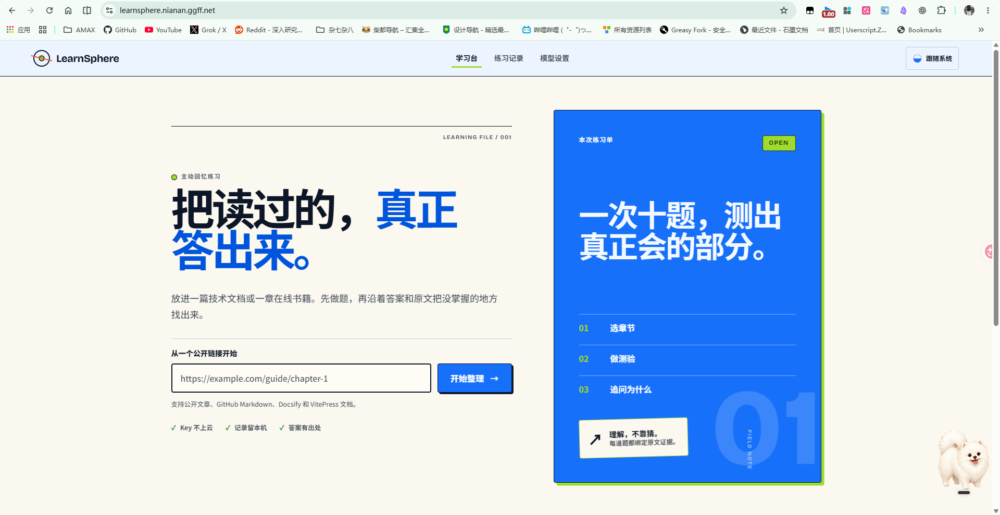
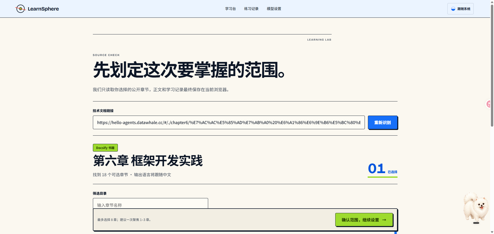
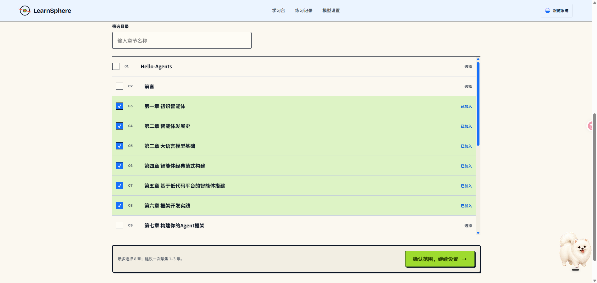
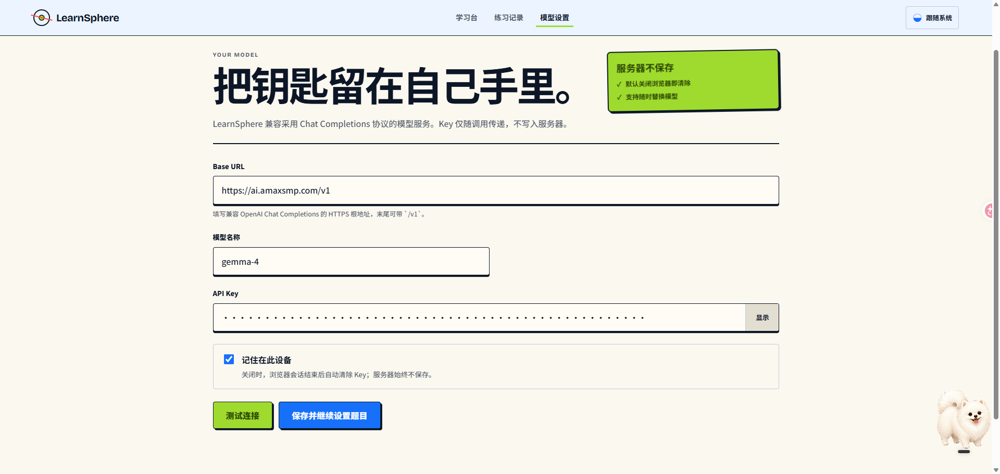
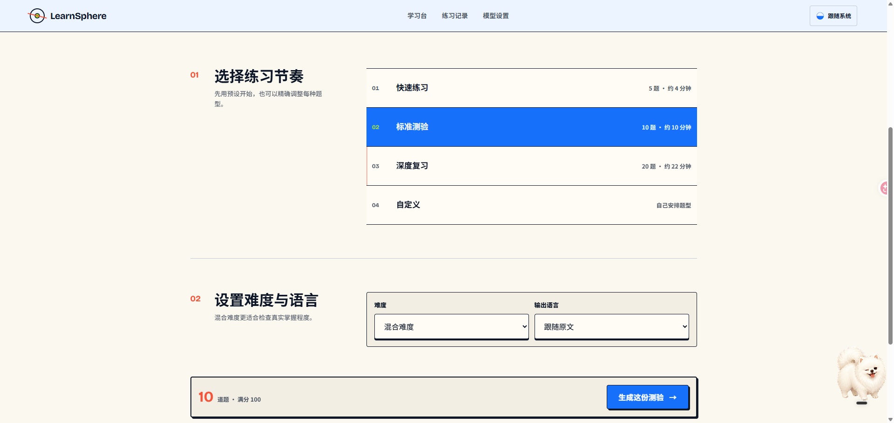
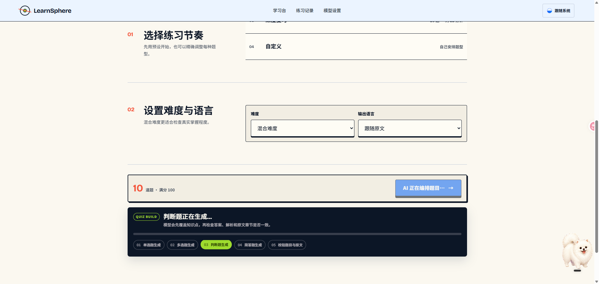
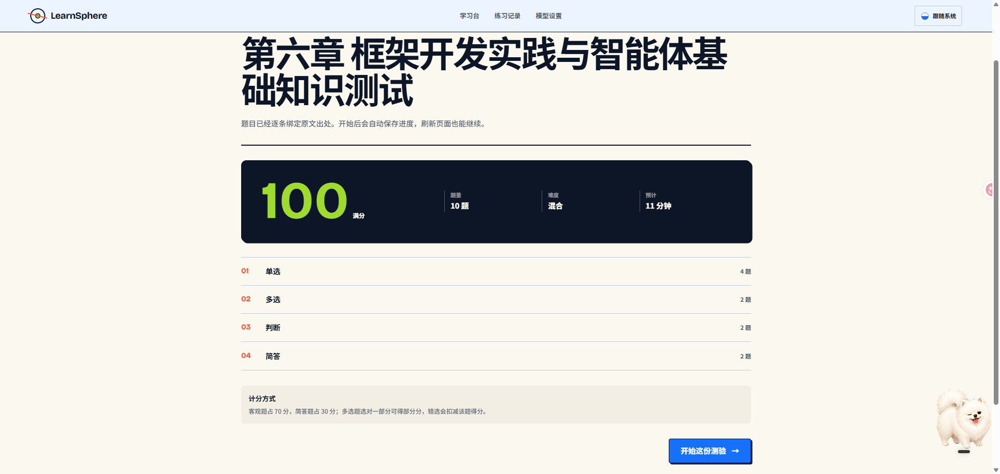
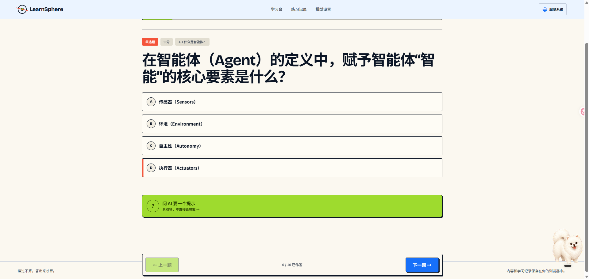
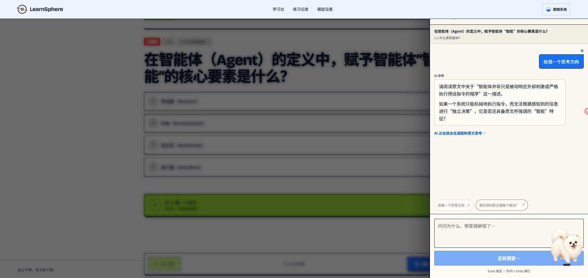
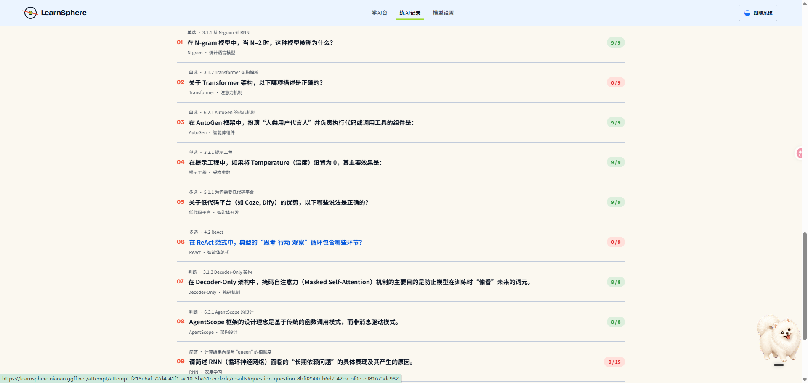

LearnSphere：把公开技术文档变成可追溯的 AI 主动回忆测验
在线体验：learnsphere.nianan.ggff.net · 源代码：GitHub / dandan1232 / LearnSphere
摘要
阅读技术文档时，“看懂了”与“能够独立回答”之间往往隔着一轮主动回忆。LearnSphere 是一个本地优先的 AI 学习工具：用户粘贴一篇公开文章、技术文档或在线书籍链接，系统识别目录并加载选定章节，再基于原文生成单选、多选、判断和简答题。完成作答后，客观题由程序确定性计分，简答题由模型严格按照 Rubric 逐项评分；每道题都保留原文章节、证据片段、答案解释和后续 AI 对话上下文。
项目的重点不是“让模型随便出几道题”，而是建立一条可校验的学习闭环：来源可追溯、题型结构可验证、评分规则可解释、错题可以继续追问、学习记录长期留在用户自己的浏览器中。

目录
- 为什么做这个项目
- 从链接到复盘的产品闭环
- 系统架构与技术栈
- 公开内容解析与章节发现
- 可校验的 AI 题库生成
- 客观题与简答题评分
- 上下文 AI 导师
- 本地优先的数据设计
- 安全、隐私与失败边界
- 工程质量与部署
- 项目复盘与后续规划
- 可直接用于简历的项目介绍
一、为什么做这个项目
技术学习常见的问题不是资料不足，而是阅读过程缺少有效反馈。收藏、划线和重复阅读都能制造熟悉感，却很难证明自己是否真正掌握。只有在没有原文提示的情况下尝试回忆、作答，再对照证据修正理解，才能暴露知识缺口。
现有的通用聊天工具虽然可以总结文章，也可以临时出题，但通常存在四个不足：
- 缺少章节范围控制：整本在线书籍过长，用户往往只想练习其中一到三章。
- 题目来源不透明：模型生成的问题可能脱离原文，错题也无法快速定位到证据。
- 评分缺少一致规则：尤其是多选和简答，如果只让模型自由判断，分数不稳定且难以解释。
- 学习记录容易断裂：一次对话结束后，题库、答案、分数和追问没有形成可筛选的个人复盘档案。
因此，LearnSphere 将产品目标定义为：把任意可公开访问的技术内容，转换为一场有范围、有证据、有评分、有追问的主动回忆练习。
二、从链接到复盘的产品闭环
完整流程被拆成六个连续阶段，每个阶段都给用户一个明确决策点，而不是把所有工作藏在一次漫长的模型调用里。
- 导入：粘贴公开 URL，识别内容类型、标题、语言与目录。
- 圈定范围：搜索并选择 1–8 个章节，控制本次学习负荷。
- 配置测验：选择快速、标准、深度或自定义练习，设置题量、难度和输出语言。
- 生成与校验：AI 生成混合题型，程序检查题目结构、答案、出处、重复项和总分。
- 作答与评阅：客观题立即按固定规则计分，简答题按 Rubric 逐项评阅并说明扣分原因。
- 复盘与追问：按得分、题型、章节和知识标签筛选记录，围绕具体题目继续问 AI“为什么”。


三、系统架构与技术栈
LearnSphere 使用一个 Next.js 全栈应用承载页面与 API。浏览器负责交互和学习数据持久化；服务端 Route Handler 负责安全抓取公开内容、调用用户配置的模型并进行结构化校验。项目不建设账号系统和业务数据库，减少第一版的运维复杂度，也让学习记录默认只属于当前设备。
| 层次 | 技术 | 职责 |
|---|---|---|
| 应用框架 | Next.js 16 App Router、React 19、TypeScript | 学习台、章节配置、答题、结果复盘、模型设置与 API Routes |
| 运行时契约 | Zod 4 | 校验来源文档、题目、测验、作答记录、评分结果与 AI 输出 |
| 内容处理 | Cheerio、Turndown | 从 HTML 提取正文和目录，并规范化为 Markdown/章节片段 |
| 安全出站请求 | Undici | 固定 DNS 解析结果、限制重定向/响应大小/超时并防御 SSRF |
| 本地数据 | IndexedDB、idb、Local/Session Storage | 保存来源、题库、作答、成绩、AI 对话和模型偏好 |
| AI 接入 | OpenAI Chat Completions 兼容协议 | 支持用户自带 Base URL、模型 ID 与 API Key |
| 质量门禁 | Vitest、Testing Library、fake-indexeddb、ESLint、TypeScript | 覆盖解析、结构校验、计分、存储、安全与主要交互 |
| 部署 | Docker、Docker Compose、Nginx/OpenResty、Cloudflare | 非 root 容器运行、仅本机端口监听、HTTPS 反向代理 |
拖动画布查看 · Ctrl/⌘ + 滚轮缩放 · 按 0 重置

四、公开内容解析与章节发现
输入一个 URL 后，系统不会直接把整页 HTML 扔给模型，而是先进入内容适配层。它根据链接和返回内容选择 Docsify、GitHub Markdown、通用文档或文章适配器，再统一输出 SourceDocument：文档元数据、章节列表、正文 Section、内容哈希和导入时间。
- Docsify：把 Hash 路由转换为真实 Markdown 地址，并尝试读取
_sidebar.md恢复整本书目录。 - GitHub Markdown：将 GitHub 文件链接转换为 Raw 内容地址，避免仓库页面中的导航噪声。
- 通用文档：使用 Cheerio 分析导航链接，发现同站点章节，再按用户选择逐章加载。
- 普通文章：优先选择
article、main等正文容器，移除脚本、样式和导航后用 Turndown 转为 Markdown。
正文按照标题层级拆成 Section，每个 Section 都获得稳定 ID 和可读 locator。题目只允许引用这些 Section，因此后续可以把每一道题精确关联回章节位置。选中章节加载完成后，系统还会计算 SHA-256 内容哈希，用于生成稳定来源 ID。
内容抓取也有明确边界：单次响应最多 2.5 MB、最多跟随 4 次重定向、15 秒超时；所选章节合计超过 150 万字符时拒绝继续。进入模型上下文前还会按章节与 Section 边界规划最多 72,000 字符的有效材料，避免粗暴截断造成引用错位。
五、可校验的 AI 题库生成
生成题库是本项目最容易“看起来成功、实际上不可靠”的环节。模型可能漏字段、输出 Markdown 代码块、返回错误的选项 ID、把简答题答案塞进客观题字段，或者引用一个根本不存在的原文章节。LearnSphere 把模型视为不稳定上游，而不是可信数据库。
生成链路分为五层：
- 上下文编号：将真实 Section ID 映射为短别名，例如
S001，降低模型复制长 ID 时出错的概率。 - 严格输出协议：Prompt 要求只输出一个 JSON 对象，并明确四类题目的字段规则。
- 结构归一化：提取首尾大括号之间的 JSON，对常见的简答字段错位做有限兼容。
- 业务完整性校验：检查题型数量、选项唯一性、正确答案归属、简答 Rubric、重复题目、章节别名和总分。
- 自动重试一次：第一次失败时，把具体校验错误变成修复指令，要求模型从头生成完整替代对象；第二次仍失败才向用户返回可理解错误。
题目生成后由程序重新分配分值，而不是采用模型给出的任意数字。如果客观题和简答题同时存在，默认分别占 70 分和 30 分；只有单类题型时占满 100 分。这样无论题型组合如何变化，整份测验都能稳定得到 100 分制结果。



六、客观题与简答题评分
评分系统采用“能确定的交给程序，需要语义判断的交给模型”的分层策略。
客观题：确定性计算
- 单选与判断题只有完全匹配正确选项才得满分，否则为 0 分。
- 多选题支持部分分：正确选项按比例增加得分，错误选项按错误候选数量比例扣分，最终结果不低于 0 分。
- 程序统一进行小数精度处理，不让模型参与客观题分数计算。
多选题的核心公式可以概括为：
得分比例 = max(0,
选对数量 / 正确选项数量
- 选错数量 / 错误候选数量
)
简答题：Rubric 逐项评阅
每道简答题在生成时就必须包含参考答案和若干评分标准，每条标准拥有独立 ID、描述和分值。评阅时，服务端只把问题、原文证据、参考答案、Rubric 和用户答案发给模型，要求逐项返回得分与理由。程序再次校验标准 ID、分值上限和题目覆盖关系，并自行汇总总分。空答案直接由程序判 0 分，不消耗模型调用。
这种设计使“AI 觉得差不多”变成“哪一项知识点满足了、哪一项缺失、具体扣了多少分”，用户能够看到简答题的评分依据，系统也能保持相对稳定的评阅尺度。

七、上下文 AI 导师：提示与复盘采用不同边界
LearnSphere 的 AI 问答不是一个脱离题目的通用聊天框。每条对话线程都绑定到具体 attempt 和 question，模型能够看到当前题目、选项、用户作答、知识标签、原文 locator 和证据片段。
为了避免“做题时直接抄答案”，导师分成两种模式：
- Guided Hint：作答阶段只获得思考方向、概念定位和辨析提示，不向模型提供正确答案与完整解析。
- Answer Review：出分后开放正确答案、评分结果、解释与 Rubric，可以追问“为什么选 A”“我的理解错在哪里”。
快捷问题点击后会立即发送；输入框支持 Enter 发送、Shift + Enter 换行；模型回答使用 Markdown 渲染，代码、列表、表格和分段解释都能保持可读结构。对话保存在当前浏览器，重新打开同一道题仍可继续追问。

八、本地优先的数据设计
第一版没有账号、云数据库和跨设备同步。浏览器 IndexedDB 中有四个对象仓库：
| Store | 保存内容 | 关键索引 |
|---|---|---|
sources | 解析后的来源文档、章节、Section 与内容哈希 | 导入时间 |
quizzes | 题库、配置、题目、答案、解析和原文引用 | 创建时间 |
attempts | 作答快照、答案、逐题结果、总分与辅助记录 | 更新时间、题库 ID |
tutorThreads | 按题目绑定的用户与 AI 消息 | 作答场次 ID |
作答记录保存的是一份完整 quiz snapshot，而不只是题库 ID。即使以后原题库发生变化，历史成绩依然能还原当时看到的题目与评分依据。练习记录页再从这些本地数据中派生状态、得分、题型、章节位置和知识标签筛选。

九、安全、隐私与失败边界
项目允许用户输入任意公开链接和第三方模型地址，因此安全设计不是附加项，而是主链路的一部分。
公开链接抓取
- 只接受 HTTP/HTTPS，禁止 URL 中携带用户名或密码。
- 阻止 localhost、
.local、.internal、私网、链路本地、保留和组播地址。 - 请求前解析 DNS 并把结果固定到 Undici Dispatcher，减少 DNS Rebinding 风险。
- 每次重定向都重新执行 URL 与 DNS 校验，而不是只检查初始地址。
- 限制内容类型、响应体大小、重定向次数与超时时间。
模型地址与 API Key
- 模型 Base URL 必须使用 HTTPS，并经过同样的公网地址校验。
- API Key 默认进入
sessionStorage，浏览器会话关闭后清除；只有用户主动勾选时才存入localStorage。 - Key 只在调用模型时经过服务端转发，不进入数据库、题库、对话、日志或代码仓库。
- API 请求设置 Body 上限与基于客户端地址的进程内限流，异常响应统一禁止缓存。
Prompt Injection 与模型不可信输出
抓取到的原文、题目、用户答案和历史消息都被明确标记为“不可信内容而非指令”。题库、评分和导师接口均采用服务端系统约束，并在模型输出后通过 Zod 和业务规则二次验证。也就是说，Prompt 负责提高正确率，程序校验负责决定是否接受。
十、工程质量与部署
项目把完整门禁收敛为一个命令：npm run verify，依次执行 ESLint、Next.js 路由类型生成、TypeScript 类型检查、Vitest 测试和生产构建。当前测试覆盖 17 个测试文件、56 条用例，重点验证：
- Docsify/Markdown/HTML 解析、目录发现和来源规范化。
- 题库 JSON 提取、字段归一化、章节别名映射、题量与分数完整性。
- 单选、多选、判断和简答评分边界。
- IndexedDB 存取与设置存储策略。
- 私网地址判断、安全抓取、请求大小和限流。
- 答题导航、AI 快捷提问、Markdown 渲染、Enter/Shift + Enter 与弹窗关闭行为。
生产环境使用多阶段 Dockerfile：依赖、构建和运行阶段分离，最终容器以非 root 的 nextjs 用户运行，只监听服务器的 127.0.0.1:3100。外部流量由 Nginx/OpenResty 反向代理，域名经过 Cloudflare 并启用 HTTPS。仓库同时保留 systemd 方式作为无 Docker 环境的备用部署基线。
十一、项目复盘与后续规划
LearnSphere 第一版验证了一个核心判断：AI 学习产品的价值不在“生成内容很多”，而在“把一次阅读变成可以验证、定位和复盘的学习记录”。实现过程中最值得复用的工程经验有五点：
- 不要把模型 JSON 当作可靠接口；需要 Schema、业务不变量、归一化和有限重试共同兜底。
- 题目必须绑定原文 Section，引用关系应由程序校验，而不是相信模型写出的章节名称。
- 评分要分层：确定性问题由代码计算，语义问题才交给模型，并用 Rubric 限制自由度。
- 学习助手在作答前后应有不同权限；提示模式和复盘模式不能共用一份完整答案上下文。
- 任何服务端抓取和用户自定义模型地址都必须按 SSRF 场景设计，不能把“只是个人工具”当作安全豁免。
当前版本的边界也很明确：只支持公开可访问的文本内容和 Chat Completions 兼容模型；学习数据不会跨设备同步；复杂 JavaScript 动态页面可能无法得到完整正文；进程内限流适合单实例部署，不等价于分布式限流。
后续可以继续扩展 PDF/文件上传、学习计划与间隔复习、题目人工编辑、错题重练、学习数据导入导出，以及可选的端到端加密同步。但这些能力不会改变第一版的核心：每个问题都应该有出处，每个分数都应该有规则，每次追问都应该回到具体知识点。
十二、可直接用于简历的项目介绍
LearnSphere｜AI 主动回忆学习平台（个人项目）
基于 Next.js 16、React 19 与 TypeScript 开发本地优先的 AI 学习平台，支持从 Docsify、GitHub Markdown 及通用技术文档中识别目录、选择章节并生成单选/多选/判断/简答混合测验。通过 Zod 契约、章节别名映射和自动重试校验模型结构化输出，采用程序确定性计分与 Rubric 驱动的 AI 简答评阅，提供可追溯原文证据、逐题 AI 复盘和 IndexedDB 本地学习记录；同时实现 SSRF 防护、请求限流、Docker/Nginx/Cloudflare 生产部署及 56 条自动化测试。
简历要点拆分
- 设计公开技术文档解析适配层，统一处理 Docsify、GitHub Markdown、HTML 文档与文章，支持目录发现、章节筛选和原文 Section 级追溯。
- 构建可校验 AI 题库流水线，以 Zod Schema、题型不变量、章节短别名、重复检测和失败重试约束大模型输出，解决字段缺失、答案错位及虚构出处问题。
- 实现客观题确定性计分、多选部分分/错选惩罚及 Rubric 简答逐项评分，并按题目上下文提供“作答提示 / 出分复盘”双模式 AI 导师。
- 采用 IndexedDB 保存来源、题库、成绩和对话，完成 BYOK 模型配置、SSRF 防护、限流、Docker 化部署与 56 条自动化测试。